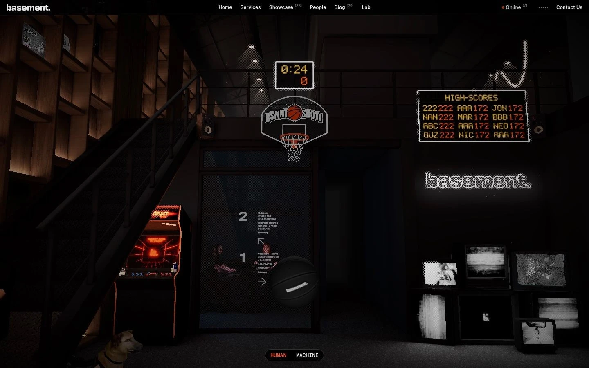

Сайт 004 · Интерактив и игра · Агентства и студии
basement.studio
3 место в чемпионате · 81.2 / 100
Screens/004.webp, доминирующий цвет занимает 89% кадра.Что это
Сайт аргентинской студии дизайна и разработки, где по разделам перемещаешься как по смоделированному в 3D офису студии. Страница /basketball — мини-игра внутри этого пространства: кольцо, бросок мышью, шот-клок 24 секунды, счёт, множитель и таблица рекордов. Собрано на Next.js с React 19, three.js и @react-three/fiber, освещение запечено в .exr-лайтмапы, звук — отдельный набор из десятков .mp3, контент приходит из Sanity и BaseHub.
Описание владельца коллекции: Необычный игровой сайт студии, перемещение по которому показано как прогулка по офису. На главном экране интерактивная игра в баскетбол, где нужно забросить мяч в кольцо мышью.
Чем интересен
- Запись — про страницу /basketball внутри большого сайта студии: на ней живут общая навигация из шести разделов и глобальный футер, и она включена в sitemap.
- Перемещение по сайту сделано как прогулка по 3D-офису: конфигурации камеры для каждого раздела лежат прямо в данных страницы.
- Освещение запечено: больше 20 .exr-лайтмапов с AO-картами и явной привязкой к именам мешей — сцена не считает свет в реальном времени.
- Внутри сцены разложены коллекционные 3D-предметы с настоящими метаданными проектов, то есть сама сцена работает портфолио.
- Под игру собран отдельный звуковой набор из десятков файлов, включая стрик и тему сайта; есть режим MACHINE — текстовые версии страниц для машин (/ai/home, /ai/services).
Все 30 номинаций сайта
Итог: 81.2 / 100 по профилю «Портфолио и агентство». Первых мест в критериях: 10 (единолично 0, разделено 10), призовых мест: 13. Строки отсортированы по месту в номинации, ссылка ведёт к номинации в чемпионате.
- Эстетика и оригинальность
- Инновационность в дизайне
- Мультимедийность
- Интерактивные элементы
- Современные технологии
- Креативность в решении задач
- Уникальность предложения
- Соответствие бренду и ЦА
- Целостность
- Соответствие заявленному
- Экспертность
- Попадание в номинацию
- Полнота реализации
- Удобство интерфейса
- Интеграции
- Стабильность
- Работа форм и поиска
- Отзывы и рейтинги
- Релевантность и полнота
- Уникальность и экспертность
- Социальная ответственность
- Безопасность
- SEO-оптимизация
- Интуитивность навигации
- Актуальность
- Прозрачность
- Адаптивность
- Доступность (a11y)
- Грамотность
- Читабельность
Обоснования по разделам
- Юзабилити и UX
- Навигация из шести разделов и понятная игровая рамка (шот-клок, счёт, подсказка из двух шагов, выход по Esc); h1 в разметке нет, доступность 3D-сцены и мобильный опыт не проверялись.
- Дизайн и визуальное восприятие
- Почти чёрная сцена с точечным тёплым светом, LED-табло и моноширинными служебными надписями — цельный язык без скруглений и декора.
- Контент
- Разделы, 26 кейсов, 29 статей блога, страница команды; тексты неформальные, но грамотные.
- Техническое качество
- Современный и тяжёлый стек: three.js, React 19, запечённые лайтмапы; sitemap на 67 адресов и robots на месте, но h1 и структурированных данных нет.
- Функциональность и интерактивность
- Игра, режим MACHINE с текстовыми версиями страниц, интеграции Sanity, BaseHub и PostHog; поиска по сайту не найдено.
- Доверие и репутация
- Контакты и копирайт есть, страниц Privacy и Terms не найдено, отзывов нет — доказательство держится на клиентах и кейсах.
- Инновации и технологичность
- Сцена-портфолио, запечённое освещение, отдельный звуковой набор и View Transitions API.
- Соответствие категории и целям
- Для студийного сайта это максимально далёкий от шаблона вариант, при этом разделы и кейсы на месте.
Что не проверено
- Живой запрос не выполнен: TLS-хендшейк к basement.studio сбрасывается, при том что example.com и vercel.com в тех же условиях отвечают 200. Все данные собраны по снапшотам Internet Archive (последний — 2026-04-30).
- Фактический HTTP-статус живой страницы не измерен: 200 взят из снапшота.
- Тега h1 на /basketball в разметке нет — появляется ли он после клиентского рендера, не проверено.
- Игровая механика в действии (физика броска, подсчёт очков, стрик) не проверена: логика живёт в клиентских чанках, браузер не запускался.
- Числа в навигации расходятся между снапшотами: Showcase 25 и Blog 27 на /basketball против 26 и 29 на главной.
- HEX-токены бренда (brand-k, brand-w1, brand-o) не подтверждены: CSS-файлы, где они объявлены, в архиве отсутствуют.
- GSAP кодом не подтверждён — упоминается только в JSON-LD и в заголовке статьи блога.
- Мобильная версия, адаптив, производительность и доступность не проверялись; звук и WebGL-heavy сцена делают эти вопросы открытыми.
- Снапшотов страниц /showcase и /people в архиве нет: они подтверждены только как ссылки и записи sitemap.
Паспорт
- Домен
- basement.studio
- Тип сайта
- Интерактив и игра
- Категории
- Агентства и студии, Игры и развлечения
- Подкатегории
- Студия разработки, Игровая студия
- Для кого
- Дизайнерам, Разработчикам, Геймерам, Агентствам
- Стиль
- Иммерсивный 3D, Неон, Утилитарный техно
- Приёмы
- WebGL и 3D, Встроенная игра, Звук, Тёмная тема по умолчанию, Микроанимации, Переходы между страницами
- Технологии
- Next.js (App Router), React 19.0.0, three.js, @react-three/fiber, Framer Motion 12.0.0-alpha.2, Tailwind CSS, Sanity, BaseHub, Vercel, View Transitions API, PostHog
- Язык
- Английский
- Страна
- Аргентина, Мар-дель-Плата (по данным JSON-LD)
- Автор
- basement.studio LLC
- Год
- 2020
- Добавлен
- 2026-09-30
Палитра
- #0A0606 — 89% кадра
- #342924 — 6% кадра
- #504C4B — 1% кадра
- #6F6D6C — 1% кадра
- #908E8D — 1% кадра
измерено из Screens/004.webp (почти чёрный фон занимает 89% кадра); красно-оранжевые акценты LED-табло видны на скриншоте, но в доступных CSS-файлах не подтверждены
- Режим
- Тёмная
- Цвет фона
- Красный
Чемпионат
3 место из 31 · 81.2 / 100 · первых мест 10 из 30 · сильнее всего: Эстетика и оригинальность (1 место)
- Эстетика и оригинальность — 1 место, 10 баллов
- Соответствие бренду и ЦА — 1 место, 9 баллов
- Целостность — 1 место, 9 баллов
- Инновационность в дизайне — 1 место, 10 баллов
- Мультимедийность — 1 место, 10 баллов
- Интерактивные элементы — 1 место, 10 баллов
- Соответствие заявленному — 1 место, 9 баллов
- Современные технологии — 1 место, 10 баллов
- Креативность в решении задач — 1 место, 10 баллов
- Уникальность предложения — 1 место, 10 баллов
Технические факты
- HTTPS
- да
- Meta viewport
- да
- Title
- basement Shot | basement.studio (33 симв.)
- Description
- A digital studio & branding powerhouse making cool shit that performs. (68 симв.)
- Open Graph
- да
- Структурированные данные
- нет
- Sitemap
- https://basement.studio/sitemap.xml — 67 URL, lastmod 2026-03-02
- Robots
- есть: Allow: /, указаны Host и Sitemap
- Аналитика
- PostHog
- Проверено ссылок
- 15
- Битые ссылки
- нет
- Контакты
- hello@basement.studio, sales@basement.studio (в JSON-LD), соцсети X, Instagram, GitHub, LinkedIn, подписка «Roll Me In»
- Юридическая информация
- © basement.studio LLC 2026; отдельных страниц Privacy и Terms не найдено
Технологии с доказательствами
- Next.js (App Router) — чанки app/basketball/page-*.js, RSC-пейлоад self.__next_f в HTML
- React 19.0.0 — строка '19.0.0' в чанке a72088ec-*.js рядом со ссылками react.dev/errors
- three.js — два чанка по 333 и 372 КБ: REVISION, WebGLRenderer, шейдерные чанки meshphysical_frag
- @react-three/fiber — rendererPackageName: "@react-three/fiber" в injectIntoDevTools
- Framer Motion 12.0.0-alpha.2 — строка версии в чанке 1038-*.js
- Tailwind CSS — утилитарные классы и токены bg-brand-k, text-brand-w1, text-brand-o
- Sanity — cdn.sanity.io/images/9syto90m/production/* через /_next/image
- BaseHub — 133 вхождения 'basehub', 120 URL assets.basehub.com с .glb, .exr, .mp3, .mp4
- Vercel — параметр ?dpl=dpl_… на всех ассетах
- View Transitions API — ::view-transition-group(root) и ::view-transition-old/new в React-чанке
- PostHog — window._posthogChunkIds в чанках 9474-* и 1038-*
Что смотреть в первую очередь
Смотреть как пример сайта-пространства: навигация, портфолио и игра собраны в одной 3D-сцене, а не разложены по страницам.
Похожие в коллекции
- Utopia Tokyo — общее: Неон, Иммерсивный 3D, Переходы между страницами, WebGL и 3D, Микроанимации
- Tinloof — общее: Агентства и студии, Утилитарный техно, Переходы между страницами, Микроанимации
- The Content Architecture — общее: Утилитарный техно, WebGL и 3D, Переходы между страницами, Микроанимации
- Aevion — общее: Утилитарный техно, Иммерсивный 3D, WebGL и 3D, Микроанимации